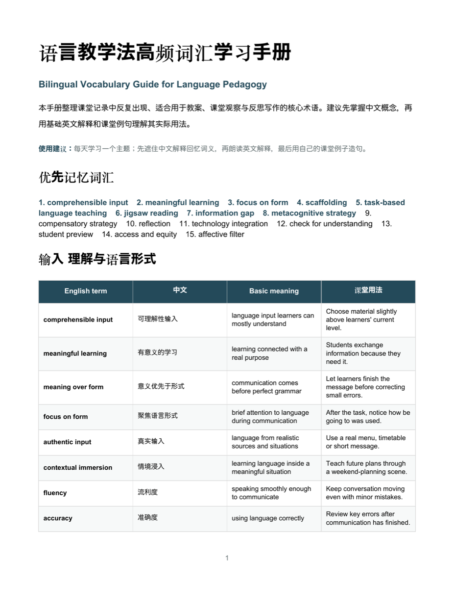
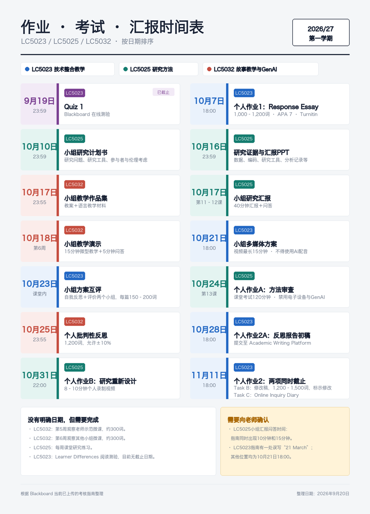

清楚提问
把目标、背景、限制和输出形式说明白。
Personal AI Learning Portfolio
我在这里记录如何使用AI阅读、整理、创作、验证和教学。这个网站不是成果终点，而是一份持续更新的学习档案，未来也会发展成可用于商业培训的真实案例库。
AI可以加快工作，但清楚表达、核实结果和形成自己的判断仍然由人负责。
把目标、背景、限制和输出形式说明白。
核对引用、词义、日期和AI可能产生的错误。
把零散回答整理成文档、图像、网页和教学材料。
记录有效方法，让一次经验变成可重复的工作流程。
目前的学习路径从个人需要出发，逐步走向可解释、可验证、可分享的AI应用。
STEP 01 · UNDERSTAND
使用中英同步阅读、基础英文改写和摘要，理解学术文章与课程要求。
STEP 02 · ORGANISE
把课堂录音、会议纪要、高频词汇和截止日期变成结构清楚的学习资料。
STEP 03 · CREATE
用AI辅助生成故事、图片提示词、教学活动和多模态语言学习材料。
STEP 04 · BUILD
将内容制作成Word学习手册、课程视觉图和可公开访问的GitHub Pages网站。
STEP 05 · SHARE
下一阶段会把个人经验整理成适合初学者和商业团队的短培训模块。
每个案例都记录问题、AI的作用、最终结果和我的判断，而不是只展示一个漂亮成品。

CASE 01 · KNOWLEDGE ORGANISATION
从课程记录中提取反复出现的教学术语，整理中文解释、基础英文释义和课堂例句，并输出为可持续复习的学习文件。

CASE 02 · INFORMATION DESIGN
从不同课程文件中核对作业要求和时间，再按课程编号、日期和任务类型制作一张便于快速查看的时间表。
CASE 03 · LEARNING SUPPORT
使用AI辅助拆解英文研究文章、制作中英同步阅读笔记，并将正式指南、课堂纪要和Reading List分开核对，避免混淆不同课程要求。
CASE 04 · AI & PEDAGOGY
学习用TLC、TPACK和故事结构设计语言教学材料，同时关注学习者需要、AI偏见、内容准确性、版权和教师的最终判断。
CASE 05 · WEB BUILDING
从单页HTML练习开始，学习限定修改范围、检查代码、发布网页，并把最初的课堂作品进一步改造成这份长期AI学习档案。
不追求复杂术语，先把六个必要信息说清楚。
基础模板
你是一位[角色]。请根据[背景]完成[任务]。只可以修改[范围]，必须保留[内容]。请用[语言/格式]输出，并检查[准确性要求]。
这些还不是最终结论，而是会随着学习继续修订的工作知识。
提示词范围、上下文、示例、输出格式，以及在执行前确认目标。
摘要、双语解释、词汇整理、难度简化、阅读问题和复习资料。
故事、图片、音频、教案和互动活动，以及技术、内容与教学法的整合。
事实核查、隐私、版权、文化偏见、学术诚信和人类最终判断。
先用真实个人案例验证，再逐步整理成适合初学者和商业团队的培训内容。
帮助初学者判断什么任务适合AI，以及怎样把复杂需求拆成清楚步骤。
用简单框架写出可控制、可检查、可以重复使用的提示词。
从资料整理到文档、图像、网页和汇报材料的完整工作流。
训练事实核查、偏见识别、隐私保护、版权意识和责任判断。
以后每完成一个重要练习，就在这里增加日期、任务、收获和下一步。
重新定义网站用途，把课堂HTML练习转化成可长期积累、未来可用于培训展示的作品集。
理解详细描述如何影响AI图片结果，并学习在教学材料中标记、核实和调整AI内容。
完成课程截止日期视觉图和语言教学法双语词汇手册。